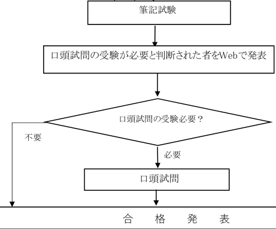
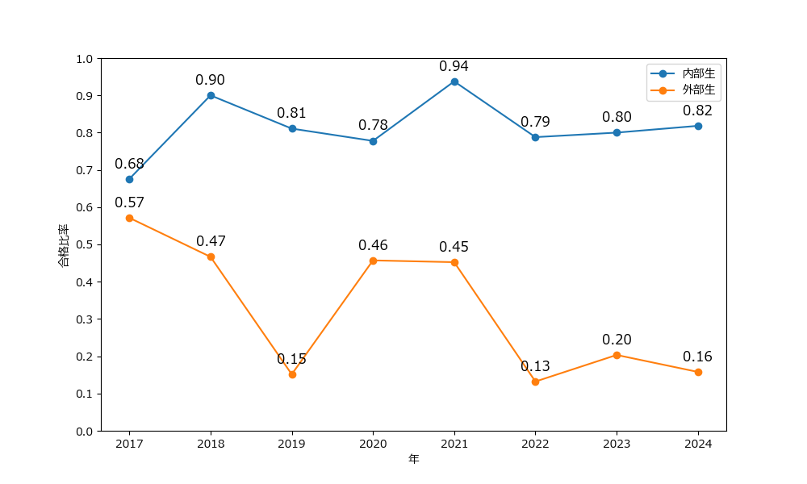

＊本文關於往年數據所提到的年份若不做特別說明，都代表入學年份。
這篇文章主要記載本人合格2025年名古屋大學知能システム専攻（2024年8月）的經驗，也會附上一些學校公開信息的彙總。囿於信息的時限性和主觀性，請謹慎參考。
出願
名古屋大學有要求出願前聯繫教授，所以我在4月初的時候給第一志望的教授發了套磁信。教授很快給了回信，雖然裡面沒有涉及內諾的內容，不過也算是有了出願資格。
一般建議在考試前4-5月聯繫教授。聯繫教授時如果當年的募集要項還未發佈，可以參考去年的內容（但考試時間每年都有幾日的變動，一定要以當年的具體時間為準）。
4月底學校發佈了今年的募集要項，筆試和面試的內容都和去年相差無幾。
就這樣到了6月底出願的時間。提前準備好各種資料並在網上出願後就可以寄紙質文件給學校了。
從中國寄跨國郵件的話，推薦時效性最高的DHL（本人的經驗是從上海2天就可以寄到），費用在300 CNY左右。
另外，出願時需要提交英語成績，一般推薦TOEIC（只有L/R，對大部分人來說更容易得高分），本人TOEIC 895，TOEFL 92，最後也是提交的TOEIC。（募集要項中有大概的分數換算表）
選拔流程
就知能システム専攻來說，整體流程大概如下圖（來自募集要項）：

即依據筆試成績決定是否進入面試，再綜合所有成績決定是否合格。
不過，這裡需要特別注意一點。雖然募集要項有寫到沒有進入面試的不一定不合格（原文見下），但根據近幾年的公開數據，所有合格者都是參加了面試的考生。所以一定不要有無需面試就能合格的僥倖心理。
なお，口頭試問の対象とならなかった場合も不合格とは限らないので，必ず合格発表日に合否を確
認すること。更早的時候（2022年及以前）確實有沒進面試但合格的可能，據說當時的選拔流程是只面試合格線附近的人，筆試成績很高的人直接免面試合格。
因為知能システム面試時會有一個簡短的課題Presentation，所以整個流程時間是非常緊湊的。今年8月7日12:30-15:30筆試，筆試後分發面試的課題資料，回去準備一天後8月8日10:00出面試名單，13:00面試，最後8月9日18:00出最終結果。
在這個流程下，顯然會有辛苦準備了一天面試課題但是沒能入選面試的情況。但是一定不要因為這個原因不去認真準備，因為出面試名單的時候再準備是肯定來不及的。
合格比率
＊這一段的數據都來自官網的公開信息。
知能システム算是情報学研究科競爭很大的一個專攻，並且這幾年的熱度還在呈上升趨勢（簡而言之就是越來越卷了）。
下表是2017-2024年的受験者数和合格者数的數據（只記入了夏入）：
| 年 | 内部生 | 外部生 | 合計 | |||
|---|---|---|---|---|---|---|
| 受験者 | 合格者 | 受験者 | 合格者 | 受験者 | 合格者 | |
| 2017 | 37 | 25 | 7 | 4 | 44 | 29 |
| 2018 | 30 | 27 | 15 | 7 | 45 | 34 |
| 2019 | 37 | 30 | 33 | 5 | 70 | 35 |
| 2020 | 27 | 21 | 35 | 16 | 62 | 37 |
| 2021 | 32 | 30 | 42 | 19 | 74 | 49 |
| 2022 | 33 | 26 | 106 | 14 | 139 | 40 |
| 2023 | 35 | 28 | 59 | 12 | 94 | 40 |
| 2024 | 33 | 27 | 95 | 15 | 128 | 42 |
可以發現，內部生與外部生的合格比率有明顯的差異（學部爺就是爺），下面的折線圖或許能夠更為直觀地表達：

雖然今年的數據還未公佈，但據本人觀察，筆試貼的座位表上有100個受験番号，缺考的人並不多。綜合來看一共有90餘人參加考試，其中合格44人。
關於面試，上文有提及自2023年開始所有合格者都是參加了面試的考生。這幾年的具體數據如下：
| 受験者 | ⼝頭試問対象者 | 合格した者 | |
|---|---|---|---|
| 2023 | 94 | 45 | 40 |
| 2024 | 128 | 47 | 42 |
| 2025 | 未知（≈90） | 49 | 44 |
筆記試験
知能システム的筆試包含「解析・線形代数」「確率・統計」「プログラミング」三大部分，其中：
- 「解析・線形代数」一般會考積分求極值／曲線長度／面積、複平面、矩陣特徵值、二次形式等內容；
- 「確率・統計」一般考Bayesian定理、CDF／PDF、期望／方差、Joint／Marginal等內容，還涉及一些常見分佈（例如二項分佈），有些年還考過矩母函數和Null Hypothesis；
- 「プログラミング」從去年開始從傳統的「アルゴリズムとデータ構造」改為考Python（主要是Numpy）。
考試時會發3張草稿用紙（A3左右大小），考試結束後可以把問題用紙和草稿用紙帶走。今年的筆試比往年的偏難，具體內容如下：
解析・線形代数
第一問是關於使用矩陣求解微分方程的，包括求特徵值的一些內容。
第二問是複平面的問題。（這一部分本人一直不太會，所以沒有全做出來）
第三問是使用積分求立體圖形的體積。這個立體圖形的切面正好是アステロイド)。
確率・統計
概率論延續了前幾年一貫的簡單難度。
第一問是關於不公平的硬幣的一些概率，涉及Bayesian定理。
第二問是CDF／PDF的性質和相互計算。
プログラミング
Python的難度比去年陡增。去年是考Python的第一年，感覺出題者比較謹慎，問的都是一些很基礎的內容（詳見過去問題）。今年直接來了一道處理矩陣的大題，包括代碼填空等題目形式。
最後下來估分，「解析・線形代数」7-7.5割，「確率・統計」満点，「プログラミング」4-5割，總計7割左右。
口頭試問
雖然募集要項上寫的是「対面とオンライン」，但實際上去年和今年都是全員線下面試，オンライン已經名存實亡了（之前有オンライン應該是因為疫情）。面試包括一般面試會有的提問以及一個3分鐘的課題Presentation（官方要求原文見下）。注意面試要求使用日本語，本人曾向學校詢問是否可以用英語回答提問，得到的答覆是「原則として，日本語で回答してください」。（不過有見到說明資料使用英文書寫的人）
知能システム学専攻における口頭試問の試験内容について
知能システム学専攻の口頭試問については日本語で実施する。図表などを用いた説明用の資料を用いて，課題に関する説明を求める（論理的な説明能力を問う）。
資料は A4 サイズ１枚（片面）とし，手書きで作成したものに限る。（資料は，書画カメラでスクリーンに投影する。）
なお，口頭試問の「課題」は筆記試験終了後に配布するので，説明用の資料は，筆記試験終了後から口頭試問開始までの時間で作成すること。
面試的控室在昨天筆試的考場，雖然天氣很熱，但大部分人都著正裝（非常不建議穿常服面試）。面試一共有3個房間，面試開始後，每個房間的負責老師就不斷來控室叫下一個人的番号。
我進的房間有4-5個教授（但是沒有我的第一志望），挨拶後就入座開始回答問題。從頭到尾只有一位教授提問。
以下是具體問到的問題：
- 卒業後は何をしている？（問這個問題是因為我gap了一年）
- 志望動機
- やりたい研究（具体的な内容）
- 問完這三個問題後，就開始讓我講配布的課題了。我收到的課題如下（我並不知道每個人收到的課題是否一樣）：
ある検索システムにクエリ５個を入力したときの出力結果を下表に示す。この結果から、この検索システムの性能を定量的に評価し、それを説明せよ（制限時間３分）。なお、図や数式を用いた手書きの説明資料（A4判1ページ）を用いること。
クエリID Q1 Q2 Q3 Q4 Q5 検索されたものの個数 700 400 500 40 3 検索されたもののうち妥当なものの個数 350 340 400 38 3
在這個環節，我犯了一個錯誤。我沒有看到只能用一張紙的規定，一共寫了兩張A4紙。考官提醒了我但是還是讓我把兩張紙的內容都講完了。講完後，對方問了一個我寫的內容相關的簡單問題，然後就讓我回座位坐下繼續剛才的問答環節。
- 他の大学も受験？両方受かったら？
- 如果沒上第一志望教授，是否能夠接受後面的教授？
- 是否考慮讀博？
面試到此就結束了，大概進行了10分鐘。氛圍比較正式，但也不是特別嚴肅。
附
「名古屋大学院情報学研究科」的重要通知（例如募集要項の配布）都可以在它的官網找到：
https://www.i.nagoya-u.ac.jp/topic/gs/
過去問題：
https://www.i.nagoya-u.ac.jp/gs/entranceexamination/exam_q/
過去の入試データ（可在此查看合格比率）：
https://www.i.nagoya-u.ac.jp/gs/entranceexamination/past_exam/